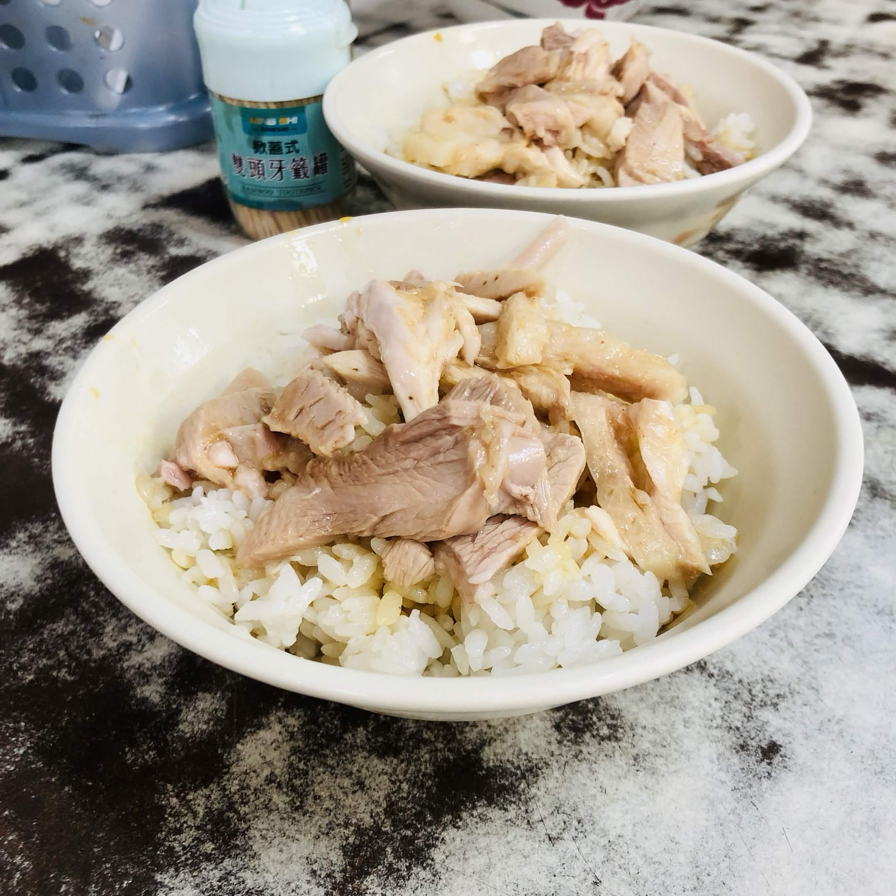

穎覓時光
關於 穎覓時光
阿樓師火雞肉飯是許多嘉義在地人與老饕極力推薦的深夜食堂首選。每到傍晚營業時間，店門口總是排起長長的人龍。這裡的火雞肉飯特色在於其肉質多汁而不乾柴，白飯淋上濃郁的雞油與香氣撲鼻的醬汁，油香十足卻不顯膩口，让人忍不住一口接一口。
除了招牌的火雞肉飯與肉片飯，店內各式黑白切小菜及平價湯品（如味噌湯、骨仔肉湯）也是來店必點的經典搭配。如果您想在深夜體驗最道地的嘉義庶民美食文化，阿樓師火雞肉飯絕對是不可錯過的選擇。


- 📍 地點：嘉義市東區過溝里成仁街109號
- 📆 營業時間：11:30–14:00/ 17:00–21:00/ 星期日公休
- 💰 價格：約 $200 - 400
- ☎️ 聯絡方式：0936 553 653